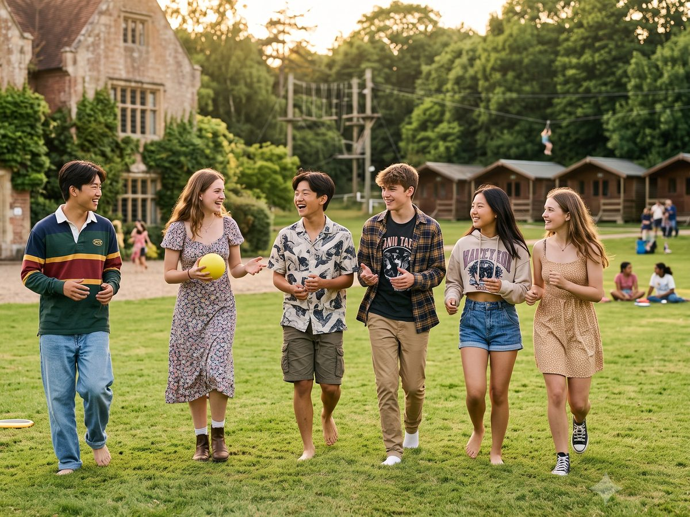
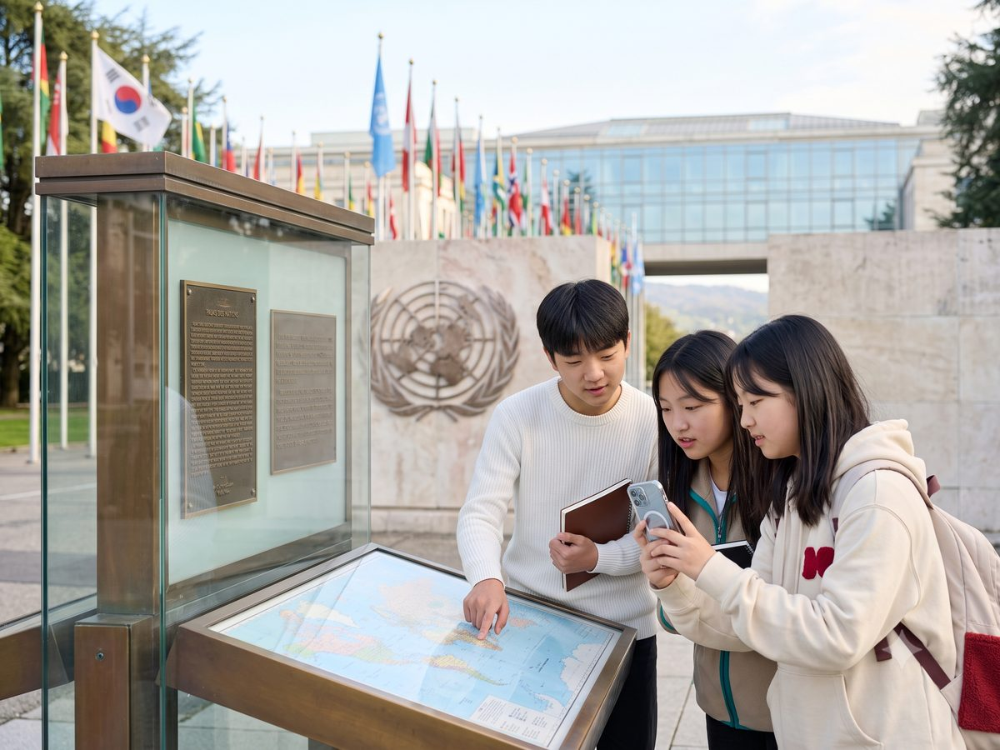
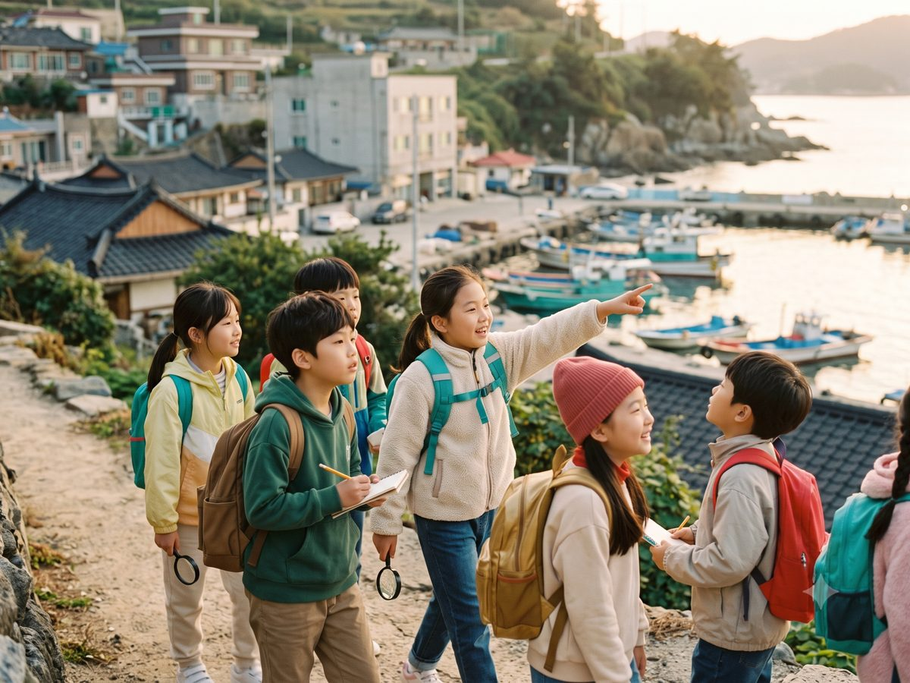

· 캠프
영어로 더 넓은 세상을
직접 경험합니다
키즈인원더는 매년 아이들의 세상을 넓혀 줄 캠프를 준비합니다. 어디로 떠날지는 해마다 달라지며, 앞으로도 새로운 곳을 계속 찾아갈 예정입니다. 장소는 달라져도 목적은 언제나 같습니다. 영어로 다른 나라의 사람들을 만나고, 낯선 문화를 직접 경험하며, 아이 스스로 영어를 배우는 이유를 발견하는 것.
지금까지의 캠프는 이런 모습이었습니다.

영국 · 2024 · 2025
다른 문화 속에서 생활해 보다
2024년과 2025년, 아이들은 영국 현지 학생들이 참여하는 여름 캠프에서 여름을 보냈습니다. 또래 친구들과 함께 생활하고 활동하며 자연스럽게 어울리는 과정에서, 영어가 사람과 관계를 이어 주는 언어가 되었습니다.
다른 문화 속에서 하루하루를 살아가며, 낯선 음식과 새로운 환경에 익숙해지고, 서로 다른 배경을 가진 친구들과 소통하는 경험을 쌓았습니다.
이 캠프의 목적은 영어를 보여 주는 것이 아니라, 사람과 마음을 나누고 세상을 직접 경험하는 데 있었습니다.

제네바 현장 프로그램 · 2026
국제기구를 직접 만나다
WFUNA 창립 80주년 기념 World Congress 연계 현장 연수 프로그램
아이들은 UN과 국제기구를 직접 방문하고, 실무자 브리핑을 들으며, 토론과 성찰의 시간을 갖고, 여러 나라에서 온 또래들과 교류합니다. 그리고 WFUNA 창립 80주년 기념 World Congress에 참여합니다.
이 프로그램의 핵심은 경쟁이 아니라 깊이 있는 직접 경험입니다. 아이들은 무언가를 겨루기 위해서가 아니라, 더 넓은 세상을 직접 경험하기 위해 제네바를 찾습니다.
WFUNA란? 세계국제연합협회연맹(World Federation of United Nations Associations)은 1946년 설립되어 제네바와 뉴욕에 본부를 둔 단체로, UN 경제사회이사회(ECOSOC)의 협의적 지위를 가지고 있습니다. 2026년은 창립 80주년이 되는 해입니다.
